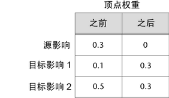

通过移动权重工具，可以轻松地将权重从一个影响移到另一个影响，而不必手动重置或更改权重值。
移动选定顶点的权重
- 选择具有要重新分配的权重的顶点。
- 打开绘制蒙皮权重工具（“蒙皮 > 绘制蒙皮权重”(Skin > Paint Skin Weights) >
 ）。
）。
- 在“影响”(Influences)列表中（或在场景中），选择要将权重从中移出的源影响，然后选择一个或多个接收移动的权重的目标影响。
- 执行下列操作之一：
- 单击“绘制蒙皮权重工具”(Paint Skin Weights Tool)中的移动权重工具
 。
。
- 从主菜单栏中选择“蒙皮 > 将权重移动到影响”(Skin > Move Weights to Influences)。
选定顶点的权重将移动到目标影响，蒙皮点现在仅受这些影响的影响。
注： 如果在“绘制蒙皮权重工具”(Paint Skin Weights Tool)中锁定了影响，则该影响不会接收从邻近影响移动的权重。例如，下表说明了随着您将权重从一个源影响移到两个目标影响时选定顶点的权重值的变化。
 - 单击“绘制蒙皮权重工具”(Paint Skin Weights Tool)中的移动权重工具